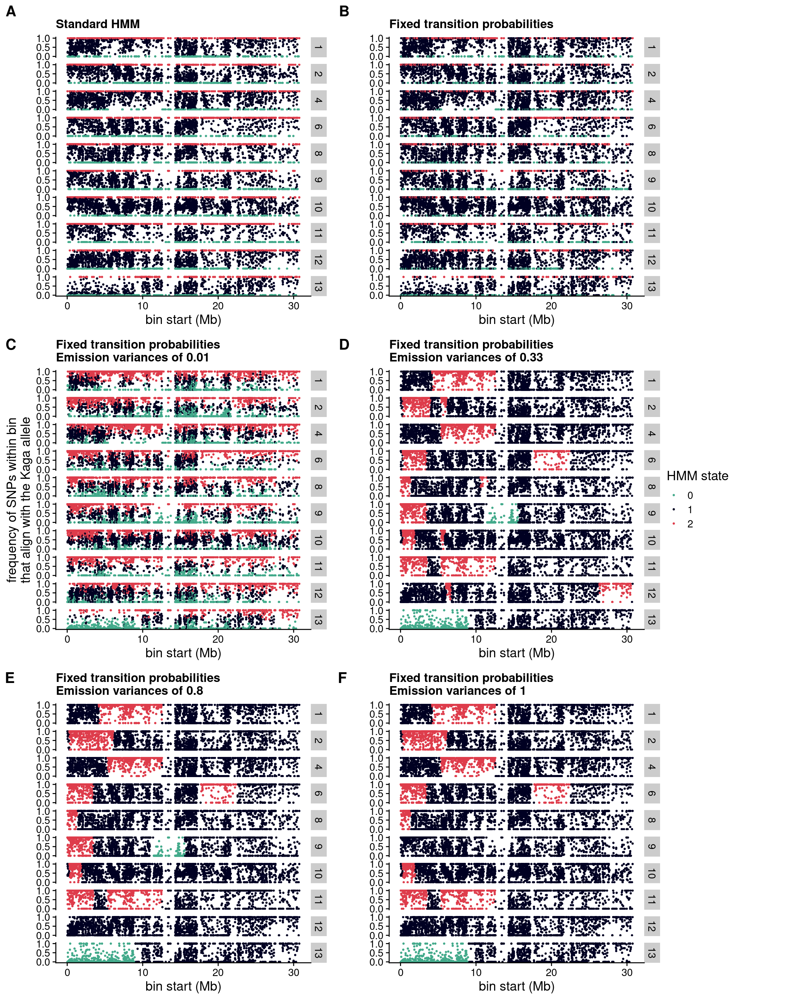

5.1 Alignment and estimation of crossover events per chromosome
To maximise the efficiency of our sequencing runs, we “shallow-sequenced” the F2 generation with the short-read Illumina platform at a depth of ~1x. We then aligned these sequences to the HdrR reference with BWA-MEM2(Vasimuddin et al. 2019), sorted the reads and marked duplicates with Picard(“Picard Toolkit” 2019), then indexed the resulting BAM files with SAMtools(Danecek et al. 2021). The Snakemake module used to map the sequences to the reference is set out here.
It would be inappropriate to genotype these shallow sequences with the same method as we used for the high-coverage sequences for the F0 and F1 generation. We therefore used a different method whereby we used bam-readcount(Khanna et al. 2022) to count the reads that supported either the Cab or the Kaga allele for all SNPs that met the criteria described above in Chapter 4, summed the read counts within 5 kb blocks, and calculated the frequency of reads within each bin that supported the Kaga allele. This generated a value for each bin between 0 and 1, where 0 signified that all reads within that bin supported the Cab allele, and 1 signified that all reads within that bin supported the Kaga allele. Bins containing no reads were imputed with a value of 0.5.
5.2 HMM for calling recombination blocks
We then used these values for all F2 individuals as the input to a Hidden Markov Model (HMM) with the software package hmmlearn(Hmmlearn/Hmmlearn [2014] 2022), which we applied to classify each bin as one of three states, with state 0 corresponding to homozygous-Cab, 1 corresponding to heterozygous, and 2 corresponding to homozygous-Kaga. Across each chromosome of every sample, the output of the HMM was expected to produce a sequence of states. Based on previous biological knowledge that crossover events occur on average less than once per chromosome (Haenel et al. 2018) (see Figure 5.1 for the average crossover rates per chromosome in zebrafish), we expected to observe the same state persisting for long stretches of the chromosome, only changing to another state between 0 and 3 times, and rarely more. To achieve this, we adjusted the HMM’s transition probabilities to be extremely low, and the Gaussian emission probabilities for each state to have a variance of 0.8, which resulted in long “blocks” of the same genotype call across the chromosome with only a small number of average transitions (i.e. crossover events) per chromosome. The Snakemake module used to call recombination blocks in the F2 generation is set out here.
Code
# Which species have a genome length of nearly 800 Mb?#readr::read_tsv(here::here("results/haenel_2018_S4.txt"),# comment = "#") %>% # dplyr::group_by(Species) %>% # dplyr::summarise(TOT_LEN = sum(Physical.map.length.Mb)) %>% # dplyr::arrange(desc(TOT_LEN))# Cyprinus carpio (common carp) has a total genome length of 847.66 Mb (similar to 800 Mb in medaka)df = readr::read_tsv(here::here("results/haenel_2018_S4.txt"),comment ="#") %>% dplyr::filter(Species %in%c("Danio.renio")) %>% dplyr::mutate(Species = dplyr::recode(Species,"Cyprinus.carpio"="common carp","Homo.sapiens"="human","Danio.renio"="zebrafish")) %>% dplyr::mutate(Chromosome = Chromosome %>% stringr::str_remove("Chr"),Chromosome = Chromosome %>%as.numeric(.) %>%factor(., levels =1:25)) %>% dplyr::mutate("crossovers per chromosome"= Crossover.rate * Physical.map.length.Mb /100) # Get mean crossovers per chromosomemean_crossovers =mean(df$`crossovers per chromosome`)# Plotdf %>%ggplot() +geom_col(aes(Chromosome, `crossovers per chromosome`, fill = Chromosome)) + cowplot::theme_cowplot() +xlab("chromosome") +guides(fill ="none") +labs(title ="Zebrafish",subtitle =paste("mean: ", mean_crossovers, sep =""))
Figure 5.1: Crossovers per chromosome based on data provided in file S4 of Haenel et al. (2018), where “crossovers per chromosome” for each chromosome \(c\) was calculated by \(\frac{crossover~rate_{c}(cM / Mb) \times length_{c}(Mb)} {100}\). The medaka genome is shorter in length than the zebrafish genome (~800 Mb compared to ~1,300 Mb), which according to the authors would suggest that medaka likely has a higher average crossover rate than what is presented in this figure.
Figure 5.2 shows how adjusting the HMM parameters changed the called genotypes for 10 F2 samples on chromosome 18, by way of an example. Allowing the HMM to train itself for the transition probabilities and emission variances, the HMM produced an apparently noisy output (A). Fixing the transition probabilities to make it very likely for a state to transition back to itself rather than to another state did not appear to change the output (B). However, increasing the Gaussian emission variances created the “blocks” that I expected, and the higher the emission variances, the “tighter” the blocks (C-F).
Code
# Load librarieslibrary(tidyverse)library(cowplot)# Set variablesIN =list("/hps/nobackup/birney/users/ian/somites/hmm_out/F2/hdrr/hmmlearn/None/5000/A.csv","/hps/nobackup/birney/users/ian/somites/hmm_out/F2/hdrr/hmmlearn/None/5000/B.csv","/hps/nobackup/birney/users/ian/somites/hmm_out/F2/hdrr/hmmlearn/None/5000/D.csv","/hps/nobackup/birney/users/ian/somites/hmm_out/F2/hdrr/hmmlearn/None/5000/C.csv","/hps/nobackup/birney/users/ian/somites/hmm_out/F2/hdrr/hmmlearn/None/5000/F.csv","/hps/nobackup/birney/users/ian/somites/hmm_out/F2/hdrr/hmmlearn/None/5000/G.csv")#################### Extra variables#################### Plot only chr 18 as an exampleTARGET_CHROM =18BIN_LENGTH =5000states =0:2pal_hom_het_2 =c("#43AA8B", "#000022", "#DE3C4B")names(pal_hom_het_2) = states# Set recode vectorrecode_vec =c(`0`="Homozygous Cab",`1`="Heterozygous",`2`="Homozygous Kaga")####################### Function for titles######################get_titles =function(MOD){if (MOD =="A"){ mod ="Standard HMM" } elseif (MOD =="B"){ mod ="Fixed transition probabilities" } elseif (MOD =="C"){ mod ="Fixed transition probabilities\nEmission variances of 0.33" } elseif (MOD =="D"){ mod ="Fixed transition probabilities\nEmission variances of 0.01" } elseif (MOD =="E"){ mod ="Error states (0.15 prob of entering error state)\nVariances: 0.2 for true state, 1 for error state" } elseif (MOD =="F"){ mod ="Fixed transition probabilities\nEmission variances of 0.8" } elseif (MOD =="G"){ mod ="Fixed transition probabilities\nEmission variances of 1" }return(mod)}#################### Read in data###################dat_list = purrr::map(IN, function(DF){ DF %>% readr::read_csv(., col_types ="iiiiiidi") %>%# add key variables dplyr::mutate(BIN_START = (BIN * BIN_LENGTH) +1,BIN_END = ((BIN +1) * BIN_LENGTH)) })# Set namesnames(dat_list) =unlist(IN) %>%basename() %>% stringr::str_remove(".csv")# Read in total medaka genome count## Get chromosome lengthsmed_chr_lens =read.table(here::here("data/Oryzias_latipes.ASM223467v1.dna.toplevel.fa_chr_counts.txt"),col.names =c("chr", "end"))## Add startmed_chr_lens$start =1## Reordermed_chr_lens = med_chr_lens %>% dplyr::select(chr, start, end) %>%# remove MT dplyr::filter(chr !="MT")## Total HdrR sequence lengthtotal_hdrr_bases =sum(med_chr_lens$end)#################### Plot#################### Make list of plotscounter =0fig_list = purrr::map(dat_list, function(DF){ counter <<- counter +1# Get title mod =get_titles(names(dat_list)[counter])# Plot scatter = DF %>%# get Mb dplyr::mutate(BIN_MB = BIN_START/1e6) %>% dplyr::filter(CHROM == TARGET_CHROM) %>% dplyr::mutate(STATE =factor(STATE, levels = states)) %>%ggplot() +geom_point(aes(BIN_MB, PROP_KAGA, colour = STATE),size =0.5) +scale_colour_manual(values = pal_hom_het_2) +facet_grid(rows =vars(SAMPLE)) + cowplot::theme_cowplot(rel_large =13/14,rel_small =11/14) +scale_y_continuous(breaks =c(0,0.5,1)) +ggtitle(mod) +xlab("bin start (Mb)") +ylab("frequency of SNPs within bin\nthat align with the Kaga allele")})# Compilelegend = cowplot::get_legend(fig_list[[1]] +guides(color =guide_legend(title ="HMM state")))out = cowplot::plot_grid(fig_list[[1]] +guides(colour ="none") +theme(legend.position='none',axis.title.y =element_blank()), fig_list[[2]] +guides(colour ="none") +theme(legend.position='none') +theme(axis.title.y =element_blank()), fig_list[[3]] +guides(colour ="none") +theme(legend.position='none'), fig_list[[4]] +guides(colour ="none") +theme(legend.position='none') +theme(axis.title.y =element_blank()), fig_list[[5]] +guides(colour ="none") +theme(legend.position='none',axis.title.y =element_blank()), fig_list[[6]] +guides(colour ="none") +theme(legend.position='none') +theme(axis.title.y =element_blank()),align ="hv", ncol =2, axis ="tblr",labels =c("A", "B", "C", "D", "E", "F"),label_size =16)# Add legendout = cowplot::plot_grid(out, cowplot::plot_grid(NULL, legend, NULL, ncol =1),rel_widths=c(1, 0.2))out

Figure 5.2: HMM states called for each bin across chr18 for 10 F2 samples, to illustrate the effect of changing the HMM’s transition probabilities and emission variances. States 0, 1, and 2 correspond to homozygous Cab, heterozygous, and homozygous Kaga. Each point represents a 5-kb bin. Y-axis is the proportion of reads within each bin that align to the Kaga allele. X-axis is the bp location of the start of each bin. A: Standard HMM with all model parameters trained on the data. B. HMM with fixed transition probabilities of 0 \(\rightarrow\) 0 or 1 \(\rightarrow\) 1 or 2 \(\rightarrow\) 2 = 0.999; 0 \(\rightarrow\) 1 or 2 \(\rightarrow\) 1 = 0.00066; 0 \(\rightarrow\) 2 or 2 \(\rightarrow\) 0 = 0.000333; 1 \(\rightarrow\) 0 or 1 \(\rightarrow\) 2 = 0.0005. C-F retain those transition probabilities but with different fixed emission variances of 0.01 (C), 0.33 (D), 0.8 (E), and 1 (F). Code adapted from rule compile_scatters_thesis in https://github.com/brettellebi/somites/blob/master/workflow/rules/08_extra.smk.
5.3 Recombination blocks
We used these genotype-block calls to generate the recombination karyoplot shown in Figure 5.3, with homozygous-Cab blocks in green, heterozoygous blocks in navy blue, and homozygous Kaga blocks in red. Missing calls are blank, where the vertical blank lines indicate that the region could not be called for any F2 individuals, likely due to an insufficient number of informative SNPs residing in those 5-kb blocks; and horizontal blank lines indicate that the sample could not be called, likely due to low sequencing coverage for that sample.
Figure 5.3: Recombination blocks in 622 F2 samples based on the ratio of reads mapping to either the Cab or Kaga allele within 5-kb bins, with homozygous-Cab blocks in green, heterozoygous blocks in navy blue, and homozygous Kaga blocks in red. Most blocks show 0-2 crossover events, as expected, with some regions showing higher numbers of crossovers interpreted as noise. Unfilled regions are those with no state called by the HMM due to a lack of reads mapping to SNPs within those 5-kb bins. Code set out in rule plot_true_hmmlearn in https://github.com/brettellebi/somites/blob/master/workflow/rules/05_2_F2_calling.smk.
In the downstream analysis, we excluded the 22 samples that showed poor coverage across the genome. For the remaining samples, I “filled” the bins with missing genotypes based on the call of the previous called bin, or if unavailable (e.g. the missing bin was at the start of the chromosome), then the next called bin (Figure 5.4); note that this figure retains the low-coverage samples (horizontal blank lines) that were excluded from further analysis to allow for a direct comparison with Figure 5.3. I used these filled genotype calls for the association tests described below in Chapter 6. As a rough way to estimate the accuracy of this genotyping method, we checked the genotypes called by the HMM for the reporter region on chr16 ~28.7Mb against our collaborators’ manual recording of reporter gene counts based on the intensity of the Her7-Venus reporter’s fluorescence. The confusion matrix below shows that 83% of genotypes called by the HMM were consistent with the reporter genotypes as inferred from fluorescence brightness.
These karyoplots show interesting recombination patterns for several chromosomes. Given the F2 individuals were selected for the reporter gene on chr16, as expected, there appears to be a strong strong skew towards those genotypes across the whole chromosome. On chr3, most samples are homozygous-Cab for the second half of the chromosome, with a consistent breakpoint around ~22 Mb. However, the final fifth of samples which show a different recombination pattern. The samples are sorted based on the order that they were phenotyped and sequenced, so this difference could have been caused by their being generated from different F1 individuals with distinct haplotypes.
Figure 5.4: Recombination blocks in 622 F2 samples based on the ratio of reads mapping to either the Cab or Kaga allele within 5-kb bins, with homozygous-Cab blocks in green, heterozoygous blocks in navy blue, and homozygous Kaga blocks in red. Most blocks show 0-2 crossover events, as expected, with some regions showing higher numbers of crossovers interpreted as noise. Bins with missing genotypes were “filled” based on the call of the previous called bin, or if unavailable (e.g. the missing bin was at the start of the chromosome), then the next called bin. Code set out in rule plot_true_hmmlearn in https://github.com/brettellebi/somites/blob/master/workflow/rules/05_2_F2_calling.smk.
Figure 5.5 shows the proportion of 5-kb bins called as either homozygous-Cab, heterozygous, or homozygous-Kaga within each F2 sample (points). The ordinary expectation for the ratios would be 0.25, 0.5, and 0.25 respectively. However, we observe a skew towards homozygous-Cab and away from homozygous Kaga. This was likely caused by the lower level of homozygosity in Kaga, and also potentially a degree of hybrid incompatibility between Cab and Kaga, given the two strains were derived from populations that are thought to be at the point of speciation.
Code
# Load librarieslibrary(tidyverse)library(karyoploteR)library(ggbeeswarm)# Get variables## DebugBIN_LENGTH =as.numeric("5000")IN_FILE ="/hps/nobackup/birney/users/ian/somites/hmm_out/F2/hdrr/hmmlearn_true/None/5000/0.8.csv"LOW_COV_SAMPLES = here::here("config/low_cov_samples.list")COV =as.numeric("0.8")MAX_READS ="None"####################### Number of states######################N_STATES =3####################### Palette and plotting params######################pal_hom_het_2 =c("#43AA8B", "#000022", "#DE3C4B", "#FBF5F3")names(pal_hom_het_2) =c(0:2, "UNCLASSIFIED")pal_hom_het_2_lines =c(karyoploteR::darker(pal_hom_het_2[1], 100), karyoploteR::lighter(pal_hom_het_2[2], 100), karyoploteR::darker(pal_hom_het_2[3], 100), karyoploteR::darker(pal_hom_het_2[4]))names(pal_hom_het_2_lines) =c(0:2, "UNCLASSIFIED")# Recode vectorrecode_vec =c(`0`="Homozygous Cab",`1`="Heterozygous",`2`="Homozygous Kaga")# Set states to loop overstates =0:(N_STATES -1)####################### Read in data######################df = readr::read_csv(IN_FILE,col_types ="iiiiiidi") %>%# add key variables dplyr::mutate(BIN_START = (BIN * BIN_LENGTH) +1,BIN_END = ((BIN +1) * BIN_LENGTH)) # Get low-coverage sampleslow_cov_samples = readr::read_tsv(LOW_COV_SAMPLES, col_names =c("FID", "SAMPLE")) %>% dplyr::pull(SAMPLE)# Read in total medaka genome count## Get chromosome lengthsmed_chr_lens =read.table(here::here("data/Oryzias_latipes.ASM223467v1.dna.toplevel.fa_chr_counts.txt"),col.names =c("chr", "end"))## Add startmed_chr_lens$start =1## Reordermed_chr_lens = med_chr_lens %>% dplyr::select(chr, start, end) %>%# remove MT dplyr::filter(chr !="MT")## Total HdrR sequence lengthtotal_hdrr_bases =sum(med_chr_lens$end)# Get number of samples (for setting the height of the Karyoplots)N_SAMPLES =unique(df$SAMPLE) %>%length()######################## Total sites covered by each state######################## All sitesprop_sites_tot = df %>%# get counts of sites per LANE and state dplyr::group_by(SAMPLE, STATE) %>% dplyr::count() %>%# spread to one row per LANE tidyr::pivot_wider(id_cols = SAMPLE, names_from = STATE, values_from = n) %>%# calculate frequencies of states per LANE dplyr::mutate(TOTAL =sum(`0`, `1`, `2`),FREQ_0 =`0`/ TOTAL,FREQ_1 =`1`/ TOTAL,FREQ_2 =`2`/ TOTAL) %>%# gather tidyr::pivot_longer(cols =starts_with("FREQ_"),names_to ="STATE",names_prefix ="FREQ_",values_to ="FREQ") %>%# order STATE and recode with meaning dplyr::mutate(STATE =factor(STATE, levels = states),STATE_RECODE = dplyr::recode(STATE, !!!recode_vec)) %>%# plotggplot(aes(STATE_RECODE, FREQ, colour = STATE, fill = STATE)) +geom_violin() +geom_boxplot(width = .5) + ggbeeswarm::geom_quasirandom(color="#7D8491", size=0.4, alpha=0.9) +theme_bw() +scale_colour_manual(values = pal_hom_het_2_lines) +scale_fill_manual(values = pal_hom_het_2) +guides(colour ="none", fill ="none") +xlab("Genotype") +ylab("Frequency") +ggtitle(paste("Emission (co)variances: ", COV,"\nMax reads per bin: ", MAX_READS,"\nBin length: ", BIN_LENGTH,sep =""))prop_sites_tot
Danecek, Petr, James K Bonfield, Jennifer Liddle, John Marshall, Valeriu Ohan, Martin O Pollard, Andrew Whitwham, et al. 2021. “Twelve Years of SAMtools and BCFtools.”GigaScience 10 (2): giab008. https://doi.org/10.1093/gigascience/giab008.
Haenel, Quiterie, Telma G. Laurentino, Marius Roesti, and Daniel Berner. 2018. “Meta-Analysis of Chromosome-Scale Crossover Rate Variation in Eukaryotes and Its Significance to Evolutionary Genomics.”Molecular Ecology 27 (11): 2477–97. https://doi.org/10.1111/mec.14699.
Khanna, Ajay, David E. Larson, Sridhar Nonavinkere Srivatsan, Matthew Mosior, Travis E. Abbott, Susanna Kiwala, Timothy J. Ley, et al. 2022. “Bam-Readcount - Rapid Generation of Basepair-Resolution Sequence Metrics.”Journal of Open Source Software 7 (69): 3722. https://doi.org/10.21105/joss.03722.
Vasimuddin, Md, Sanchit Misra, Heng Li, and Srinivas Aluru. 2019. “Efficient Architecture-Aware Acceleration of BWA-MEM for Multicore Systems.” In 2019 IEEE International Parallel and Distributed Processing Symposium (IPDPS), 314–24. IEEE.